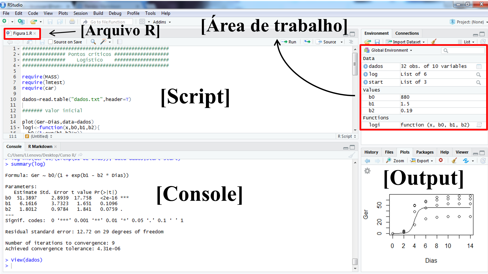

SL <- select(iris, Sepal.Length)Error in select(iris, Sepal.Length): não foi possível encontrar a função "select"O artigo R: A Language for Data Analysis and Graphics1, escrito pelos desenvolvedores da linguagem George Ross Ihaka e Robert Clifford Gentleman, marca o início de uma nova era no processamento e análise de dados: o desenvolvimento do software R.
O R é uma linguagem e ambiente estatístico que traz muitas vantagens para o usuário, embora elas não sejam tão obvias inicialmente:
No software R, todos os comandos são digitados e o mouse é pouco usado. Pode parecer antigo, pouco amigável ou até pobre em recursos visuais, mas isso faz com que nos deparemos com o melhor recurso do R: a sua flexibilidade. Para usuários familiarizados, a linguagem do R se torna clara e simples. Com poucos comandos, funções poderosas podem ser5 e o usuário é sempre consciente do que foi pedido através da ELC (Meus dados, minhas análises!). Isso contrasta com pacotes que possuem uma interface amigável (point-and-click), mas que escondem a dinâmica dos cálculos e, potencialmente, os seus erros. Finalmente, o R fornece uma ampla variedade de procedimentos estatísticos básicos ou que exigem grande esforço computacional (modelagem linear e não linear, testes estatísticos clássicos, análise de séries temporais, classificação, agrupamento, etc.) e recursos gráficos elegantes. Um dos pontos fortes de R é a facilidade com que gráficos de qualidade podem ser produzidos, incluindo símbolos matemáticos e fórmulas, quando necessário. O software R está disponível em uma ampla variedade de plataformas UNIX e sistemas similares (incluindo FreeBSD e Linux), Windows e MacOS.
Quem ja é usuário de softwares por linhas de comando, como o SAS, provavelmente não vai notar muita diferença. Toda análise se resume à seguinte sequência dados > códigos > saída. A experiência do usuário com o R, no entanto, pode ser mais atrativa utilizando o RStudio6. O Rstudio é um produto de código aberto disponível publicamente em 28/02/2011 que está disponível gratuitamente. Ele é um ambiente de desenvolvimento integrado para R que inclui
Nesta seção serão abordados alguns aspectos básicos para que o usuário do R possa desenvolver as suas análises. Será dado enfoque para áreas básicas da interface, cujo conhecimento é necessário para que um usuário inicante possa realizar sua primeira análisee. A figura abaixo mostra as principais janelas do Rstudio, incluindo o script, o console, a “área de trabalho” e o output para gráficos.

No canto inferior direito, além de servir como output para gráficos (Plots), também é o local onde os pacotes utilizados nas análises (Packages) são instalados e maiores informações sobre as funções podem ser encontradas (Help).
O primero passo é criar um novo script, seguindo os seguintes passos: File > New File > R script ou utilizando o atalho Ctrl+Shift+N. Para salvar um script, devemos clicar no botão com o símbolo de disquete (R/RStudio), escolher o nome do arquivo e o diretório onde o arquivo será armazenado no seu computador. Algumas importantes dicas:
Escolha sempre um nome sem caracteres especiais (ex., ç, ã, é, etc.)
Escolha sempre um nome curto ou abreviado, que identifique a finalidade das linhas de comando escritas (ex., dftese)
Evite espaços se o nome do arquivo for composto. Para isso, use um uderscore ‘_’(ex., df_tese)
Antes de iniciar as análises, recomenda-se escolher um diretório onde devem estar os inputs (dados) e para onde serão enviados os outputs (gráficos, arquivos .txt, .xlsx, etc). Para selecionar o diretório, basta seguir o caminho Session > Set Working Directory > Choosing diretory ou utilizar as teclas de atalho Ctrl+Shift+H.

Se você realizou o download do software R pela primeira vez e achou um tanto quanto “estranho” o pequeno tamanho do arquivo (~80 Mb), provalemente deve ter se perguntado como um software estatistico tão poderoso pode ser comprimido em um arquivo tão pequeno (pequeno em comparação com os +20 GB do SAS). A resposta é simples: somente os pacote básicos do R são baixados com o arquivo de instalação. Na medida em que o usuário necessita realizar uma análise específica, a instalação de um pacote que contém uma função específica para realizar tal análise é necessária.
A instalação dos pacotes pode ser realizada conforme a figura abaixo, ou utilizando o comando install.packages(). Após a instalação do pacote, o usuário deve utilizar a função library() para que o pacote seja carregado e as suas funções possam ser utilizadas. Quando o usuário tenta utilizar uma função pertencente a um determinado pacote e este pacote não está instalado (ou carregado), um erro é exibido.


nls()Como exemplo inicial, vamos tentar selecionar a variável Sepal.Length do conjunto de dados base iris utilizando a função abaixo. Cuidado, spoilers do pacote dplyr!
Posteriormente, o seguinte código é digitado e executado ao se selecionar a linha do código e clicar no botão run ou utilizando o atalho Ctrl+Enter).
SL <- select(iris, Sepal.Length)Error in select(iris, Sepal.Length): não foi possível encontrar a função "select"Neste caso, um erro é exibido pois o pacote dplyr não está instalado ou carregado. Caso ele já estiver instalado, a mensagem de erro acima é superada ao carregar o pacote antes de executar a função.
library(dplyr)
SL <- select(iris, Sepal.Length)Caso o pacote dplyr não esteja instalado, a maneira mais fácil de instalá-lo é instalando a coleção de pacotes tidyverse7 seguindo os passos da Figura 3 ou utilizando a seguinte função.
install.packages("tidyverse", dependencies = TRUE)
library(tidyverse)O tidyverse é uma coleção de pacotes R projetados para a ciência de dados, contendo, dentre outros, seguintes pacotes que serão utilizados neste material.
Praticamente todas as rotinas realizadas no R são baseadas em bibliotecas de códigos. Para instalar os pacotes necessários para reprodução deste material, o seguinte código é utilizado.
pacotes <- c("tidyverse", "esquisse", "metan", "rio")
# instalar os pacotes
install.packages(pacotes)É provável que a primeira instalação seja um pouco demorada, pois todas as dependências serão instaladas. Após finalizada a instalação, basta carregar o pacote que será utilizado com library().
library(tidyverse)Os pacotes disponibilizados no software R estão em constante atualização. Para verificar novas versões de pacotes é possível ir em Packages > Update que se encontra no canto inferior direito conforme demonstrado na Figura 5.

Por fim, para citar os pacotes, recomenda-se verificar a referência através da função citation(). Para o pacote metan, por exemplo, a referência oficial é encontrada no artigo que descreve o pacote
citation("metan")
Please, support this project by citing it in your publications!
Olivoto, T., and Lúcio, A.D. (2020). metan: an R package for
multi-environment trial analysis. Methods Ecol Evol. 11:783-789
doi:10.1111/2041-210X.13384
A BibTeX entry for LaTeX users is
@Article{Olivoto2020,
author = {Tiago Olivoto and Alessandro Dal'Col L{'{u}}cio},
title = {metan: an R package for multi-environment trial analysis},
journal = {Methods in Ecology and Evolution},
volume = {11},
number = {6},
pages = {783-789},
year = {2020},
doi = {10.1111/2041-210X.13384},
}Os comandos elementares podem ser divididos em expressões e atribuições. Por exemplo, podemos estar interessados em resolver a seguinte expressão \(10+15=25\).
10 + 15[1] 25No console quando passamos pelo comando, o R avalia a função e retorna o resultado. Caso queiramos armazenar este resultado em algum objeto, usamos a atribuição <- (Alt + -) que é utilizada no formato objeto <- operacao. Considerano o mesmo caso anterior, um objeto soma é criado com
soma <- 10 + 15Conhecendo estes comandos elementares, podemos passar para as operações matemáticas mais utilizadas e que são cruciais na linguagem de programação. No R, estas operações são baseadas em símbolos ou funções que se assemelham à maioria dos outros softwares estatísticos.
1 + 1 # Soma[1] 22 - 1 # Subtração[1] 12 * 2 # Multiplicação[1] 41 + 2 * 2 ^ 2 # Eleva ao quadrado, multiplica e soma[1] 9((1 + 2) * 2) ^ 2 # Soma, multiplica e eleva ao quadrado[1] 36sqrt(4) # Raiz quadrada[1] 24^2 # Potência[1] 16log(10) # Por default, o logarítimo é de base e (logarítimo natural)[1] 2.302585log(100, 10) # Logarítimo de base 10[1] 2exp(100) # exponencial[1] 2.688117e+43Para multiplicação de matrizes utiliza-se %*% ao envéz de *. Note a diferença no exemplo abaixo.
(x <- matrix(1:4, ncol = 2)) [,1] [,2]
[1,] 1 3
[2,] 2 4(y <- matrix(5:8, ncol = 2)) [,1] [,2]
[1,] 5 7
[2,] 6 8O resultado da multiplicação da matriz x e y é dado por:
\[ \left( {\begin{array}{*{20}{c}}{1 \cdot 5 + 3 \cdot 6}&{1 \cdot 7 + 3 \cdot 8}\\{2 \cdot 5 + 4 \cdot 6}&{2 \cdot 7 + 4 \cdot 8}\end{array}} \right) = \left( {\begin{array}{*{20}{c}}{23}&{31}\\{34}&{46}\end{array}} \right) \]
x * y # Errado [,1] [,2]
[1,] 5 21
[2,] 12 32x %*% y # Certo [,1] [,2]
[1,] 23 31
[2,] 34 46A função t() é utilizada para transposição de matrizes e solve() para inversão de matrizes. Vamos resolver o seguinte sistema de equações utilizando estes operadores.
\[ \begin{array}{l}{x_1} + 2{x_2} = 4\\{x_1} - {x_2} = 1\end{array} \]
Matricialmente o sistema acima é dado por:
\[ \left[ {\begin{array}{*{20}{c}}{\begin{array}{*{20}{l}}1\\1\end{array}}&{\begin{array}{*{20}{c}}2\\{ - 1}\end{array}}\end{array}} \right]\left[ {\begin{array}{*{20}{c}}{{x_1}}\\{{x_2}}\end{array}} \right] = \left[ {\begin{array}{*{20}{c}}4\\1\end{array}} \right] \]
Esse sistema de equações é representado por \({\bf{AX}} = {\bf{c}}\) e tem como solução \({\bf{X = }}{{\bf{A}}^{{\bf{ - 1}}}}{\bf{c}}\)
(A <- matrix(c(1, 1, 2, -1), ncol = 2)) [,1] [,2]
[1,] 1 2
[2,] 1 -1# Transposta de A
t(A) [,1] [,2]
[1,] 1 1
[2,] 2 -1# resolução do sistema de equações
(Ainv <- solve(A)) # Obtém a inversa generalizada de A [,1] [,2]
[1,] 0.3333333 0.6666667
[2,] 0.3333333 -0.3333333(c <- c(4, 1)) # Vetor C[1] 4 1(X <- Ainv %*% c) [,1]
[1,] 2
[2,] 1Note que o mesmo resultado anterior pode ser obtido sem a necessidade de atribuição, ao declarar todas as operações em um único comando
solve(matrix(c(1, 1, 2, -1), ncol = 2)) %*% c(4, 1) [,1]
[1,] 2
[2,] 1A função det() é utilizada para calcular o determinante de uma matriz e função eigen() para calcular calcular autovalores e autovetores
(X <- matrix(c(1, 2, 5, 3, 4, 5, 6, 1, 9), ncol = 3)) [,1] [,2] [,3]
[1,] 1 3 6
[2,] 2 4 1
[3,] 5 5 9(detX <- det(X))[1] -68(av <- eigen(X))eigen() decomposition
$values
[1] 12.980067 2.854933 -1.835000
$vectors
[,1] [,2] [,3]
[1,] -0.4785227 0.2342735 -0.9165278
[2,] -0.2017392 -0.8386325 0.2624173
[3,] -0.8545861 0.4917432 0.3018507av$values # Extrai os autovalores[1] 12.980067 2.854933 -1.835000av$vectors # Extrai os autovetores [,1] [,2] [,3]
[1,] -0.4785227 0.2342735 -0.9165278
[2,] -0.2017392 -0.8386325 0.2624173
[3,] -0.8545861 0.4917432 0.3018507A função diag() extrai a diagonal de uma matriz ou cria uma matriz onde a diagonal são os elementos declarados. Os próximos comandos extraem a diagonal de X e criam uma matriz identidade, com 3 linhas e 3 colunas.
diag(X)[1] 1 4 9diag(x = 1, nrow = 3, ncol = 3) [,1] [,2] [,3]
[1,] 1 0 0
[2,] 0 1 0
[3,] 0 0 1https://www.jstor.org/stable/1390807?seq=1#page_scan_tab_contents↩︎
Fonte: Robert Gentleman<https://biocasia2020.bioconductor.org/>; Ross Ihaka: <https://stat.auckland.ac.nz/>↩︎
https://www.gnu.org/licenses/quick-guide-gplv3.html↩︎
https://www.r-project.org/↩︎
Veja uma breve história de como o pacote metan, desenvolvido pelo prof. Olivoto, foi concebido https://methodsblog.com/2020/05/28/metan_package/↩︎
https://www.rstudio.com/↩︎
https://www.tidyverse.org/↩︎